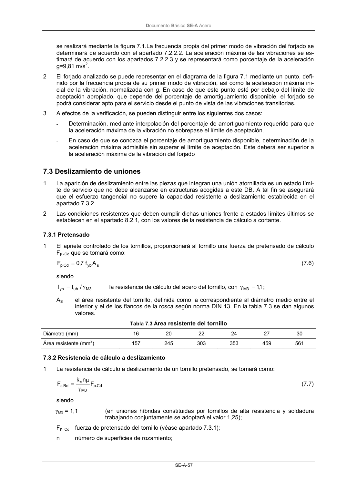

DB-SE-A Acero · edición 2007-10-23 · capa oficial
Documento DB-SE-A-oficial · SHA-256 del PDF 9ed9ea694aabfbda3bfbbef40dfe9223fde05d13c35bc2ba9751e5a96a22a64f
Página física 59 de 168.
Copia fiel del PDF fuente · Fuente oficial
Ficha de la disposición en la fuente oficial
Formato: Texto de la página (Markdown)
Documento Básico SE-A Acero SE-A-57 se realizará mediante la figura 7.1.La frecuencia propia del primer modo de vibración del forjado se determinará de acuerdo con el apartado 7.2.2.2. La aceleración máxima de las vibraciones se es- timará de acuerdo con los apartados 7.2.2.3 y se representará como porcentaje de la aceleración g=9,81 m/s2. 2 El forjado analizado se puede representar en el diagrama de la figura 7.1 mediante un punto, defi- nido por la frecuencia propia de su primer modo de vibración, así como la aceleración máxima ini- cial de la vibración, normalizada con g. En caso de que este punto esté por debajo del límite de aceptación apropiado, que depende del porcentaje de amortiguamiento disponible, el forjado se podrá considerar apto para el servicio desde el punto de vista de las vibraciones transitorias. 3 A efectos de la verificación, se pueden distinguir entre los siguientes dos casos: - Determinación, mediante interpolación del porcentaje de amortiguamiento requerido para que la aceleración máxima de la vibración no sobrepase el límite de aceptación. - En caso de que se conozca el porcentaje de amortiguamiento disponible, determinación de la aceleración máxima admisible sin superar el límite de aceptación. Este deberá ser superior a la aceleración máxima de la vibración del forjado 7.3 Deslizamiento de uniones 1 La aparición de deslizamiento entre las piezas que integran una unión atornillada es un estado lími- te de servicio que no debe alcanzarse en estructuras acogidas a este DB. A tal fin se asegurará que el esfuerzo tangencial no supere la capacidad resistente a deslizamiento establecida en el apartado 7.3.2. 2 Las condiciones resistentes que deben cumplir dichas uniones frente a estados límites últimos se establecen en el apartado 8.2.1, con los valores de la resistencia de cálculo a cortante. 7.3.1 Pretensado 1 El apriete controlado de los tornillos, proporcionará al tornillo una fuerza de pretensado de cálculo Fp.Cd que se tomará como: s yb Cd . p A f 7,0 F = (7.6) siendo 3 M ub yb / f f γ = la resistencia de cálculo del acero del tornillo, con 1,1 3 M = γ ; AS el área resistente del tornillo, definida como la correspondiente al diámetro medio entre el interior y el de los flancos de la rosca según norma DIN 13. En la tabla 7.3 se dan algunos valores. Tabla 7.3 Área resistente del tornillo Diámetro (mm) 16 20 22 24 27 30 Área resistente (mm2) 157 245 303 353 459 561 7.3.2 Resistencia de cálculo a deslizamiento 1 La resistencia de cálculo a deslizamiento de un tornillo pretensado, se tomará como: Cd . p 3 M s Rd .s F n k F γ µ = (7.7) siendo γM3 = 1,1 (en uniones híbridas constituidas por tornillos de alta resistencia y soldadura trabajando conjuntamente se adoptará el valor 1,25); Fp.Cd fuerza de pretensado del tornillo (véase apartado 7.3.1); n número de superficies de rozamiento;
